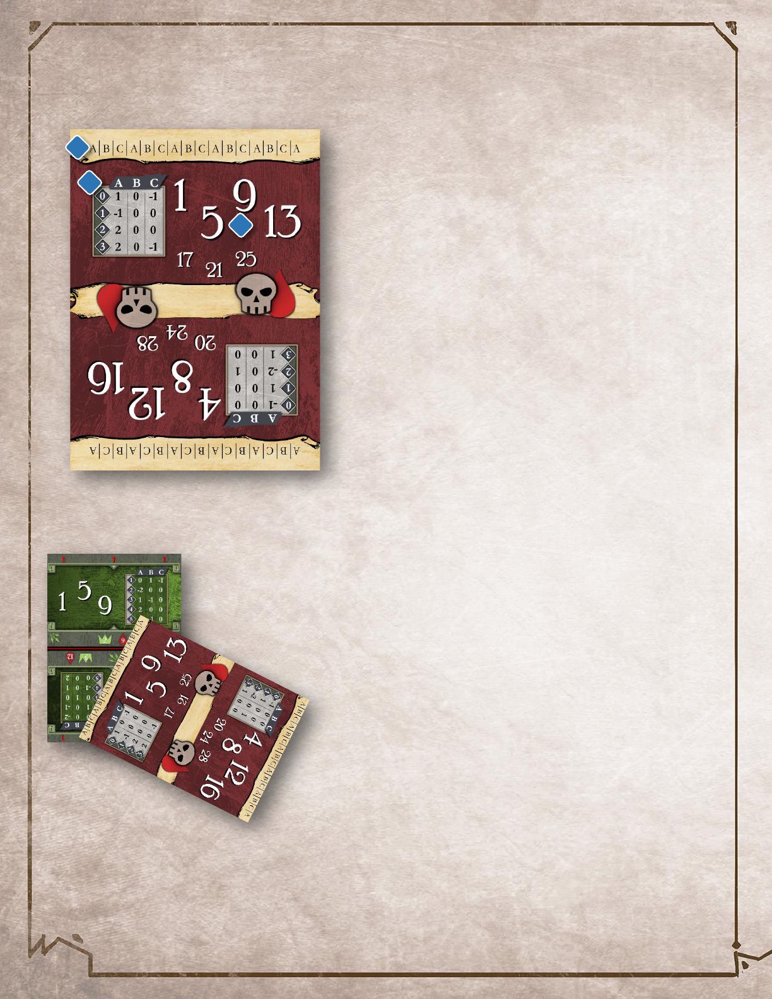
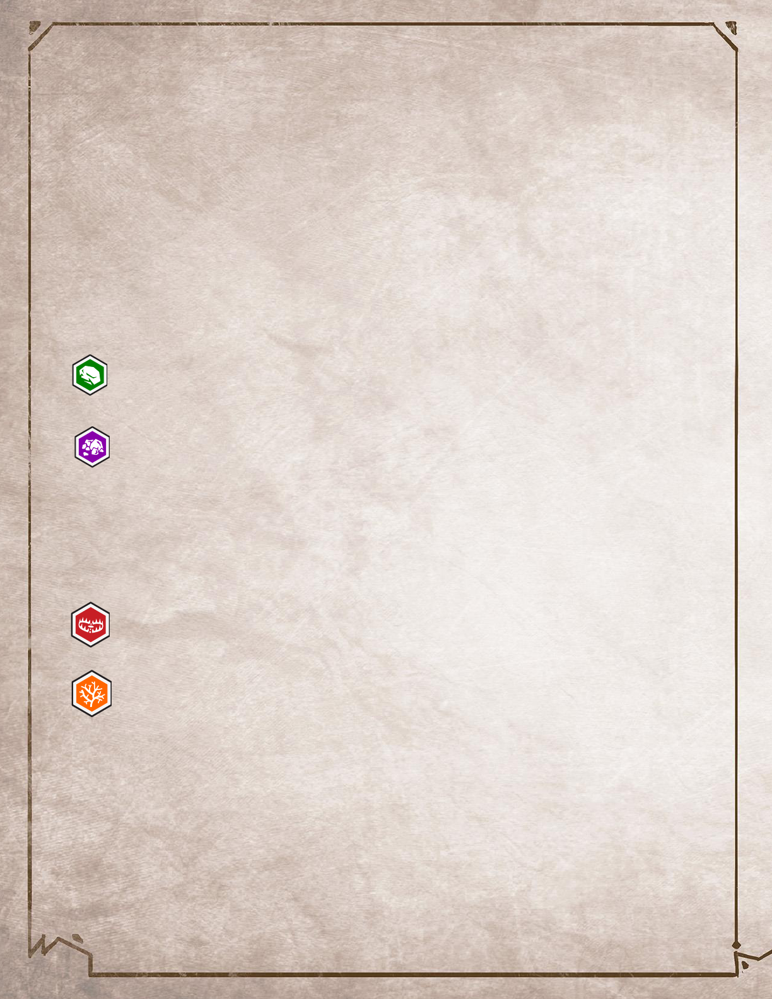

1
RULE BOOK

2
Table of Contents
Play Overview ............................................................................................................................................ 4
Character HP Card ...................................................................................................................................... 4
Character Ability Cards............................................................................................................................... 5
Monster Cards ............................................................................................................................................ 6
Monster HP Card ...................................................................................................................................... 10
Rolling ................................................................................................................................................... 10
Range Tracker Card .................................................................................................................................. 11
Scenario Tracker Card .............................................................................................................................. 12
Map Cards ................................................................................................................................................ 13
Scenario Colors ......................................................................................................................................... 13
Scenario Setup.......................................................................................................................................... 14
Optional On-Table Setup.......................................................................................................................... 15
The King Needs Your Item ........................................................................................................................ 16
Scenario Page ........................................................................................................................................... 16
Types of Map Tiles ................................................................................................................................... 17
Scenario Level .......................................................................................................................................... 18
Round Overview ....................................................................................................................................... 18
Non-Combat Rounds ............................................................................................................................. 18
Combat Rounds ..................................................................................................................................... 19
Card Selection ....................................................................................................................................... 19
Resting .................................................................................................................................................. 20
Short Rest ......................................................................................................................................... 20
Long Rest .......................................................................................................................................... 20
Determining Initiative ........................................................................................................................... 20
Character Turn ...................................................................................................................................... 20
Move ................................................................................................................................................. 21
Revealing a Room ........................................................................................................................ 21
Attack ................................................................................................................................................ 21
Ranged Attacks ............................................................................................................................ 21
Melee Attacks .............................................................................................................................. 22
Line-of-Sight ................................................................................................................................. 22
3
Advantage and Disadvantage ....................................................................................................... 23
Attack Effects .................................................................................................................................... 23
Conditions ......................................................................................................................................... 23
Lasting Effects ................................................................................................................................... 24
Elemental Infusions .......................................................................................................................... 25
Bonuses ............................................................................................................................................ 26
Special Actions .................................................................................................................................. 26
Character Damage ............................................................................................................................ 27
Exhaustion ........................................................................................................................................ 27
Items ................................................................................................................................................. 27
Monster Turn ........................................................................................................................................ 27
Order of Action ................................................................................................................................. 28
End of Round ........................................................................................................................................ 29
Entering and Completing Combat ............................................................................................................ 29
Entering Combat ................................................................................................................................... 29
Revealing the Monster Card for Combat .............................................................................................. 30
Completing Combat .............................................................................................................................. 30
Finishing a Scenario .................................................................................................................................. 31
Updating the Scenario Tracker Card ..................................................................................................... 31
Leveling Up Your Character ................................................................................................................... 31
Visiting Gloomholdin............................................................................................................................... 31
Locked Items ......................................................................................................................................... 32
Advanced Game Variant: Hindrances ...................................................................................................... 33
Hindrance Examples.............................................................................................................................. 36
Credits ...................................................................................................................................................... 37

4
Play Overview
Gloomholdin is a solo game of battling monsters, leveling up your character, buying and selling items,
and completing scenarios. The game is meant to be played as a campaign, where you use the
accompanying Scenario Book, playing through a series of adventures, unlocking new content for the
game as you progress.
Video resources for learning the game (click image to watch):
Character HP card
The character HP card includes:
(a) Your characters current HP.
(b) The current Character Attack Modifier Table
(c) Red arrows to track character location on the
map.
(d) Maximum HP for every Character Level.
(e) The Red Rolling line for rolls (see page 10).
The Character HP card sits on top of the Deck.
The Deck is the main stack of cards held in your
left hand. You will flip and/or rotate the
Character HP card to track your characters HP,
orienting the card so your current HP is on top.
Youll just need to remember which of the big
white numbers is your current HP.
Note that as you flip and rotate the Character HP
card, the active Character Attack Modifier Table
will change. This table has different values for
each card orientation.
a
b
c
d
e
Dark
Setup Video
How To Play Video
5
After every attack action your character takes, you must roll for an attack modifier, consulting the
results of your roll on this table. This is explained in more detail later in the section explaining attacking
in this rulebook.
Character Ability Cards
Playing ability cards is what allows you to perform actions in a scenario. Each round, you choose two
ability cards and use the top action of one card and the bottom action of the other card, resulting in two
actions on your turn.
Note that ability cards have two halves, a Level 1 version of the card and a Level 2 version of the card.
Only one half of an ability card is active at one time. The right half is the active half. It is visible until
discarded or lost, and the left half is covered up by other cards and is not active.
An ability card includes:
(a) The name of the ability card.
(b) An initiative number. The
initiative number of the leading
card played determines whether
you or the monster you are in
combat with goes first. Initiative is
not relevant unless in combat.
(c) The level of the card. THIS
WORKS DIFFERENTLY THAN
GLOOMHAVEN. You start with all 4
of your ability cards at Level 1. As
you progress through the
campaign, you will have the
opportunity to upgrade ability
cards to Level 2. Upgrading an
ability card means it is permanently
rotated 180 degrees, allowing you
to use the Level 2 half of the card
rather than the Level 1 half.
(d) An A-side and B-side indicator.
At the start of the scenario and
after each time you rest, your
available ability cards will all start
with their A sides facing up. When
an A-side ability card is played, it is
discarded by flipping it to the cards
a
b
c
d
d
e
f
g
h
6
B side. When a B-side ability card is played, it is discarded by sliding it behind an active ability card so it is
no longer visible.
(e) A top action and a bottom action (f). When the two ability cards are played on your turn, one is used
for the top action and the other for the bottom action. Note that a single action can contain several
separate abilities (g).
(h) One or more elements. Some abilities and items either require consuming elements in order to use
them, or may have abilities that are boosted by consuming elements.
Monster Cards
Monster cards have a lot of information on them and
are multi-purpose. They include both monsters and
items. Each half of each side of a monster card gives
you the stats of a different monster as well as a
different item.
Since there is so much information on a monster card,
well look at the monster section and the item section
separately.
7
THE ITEM SECTION OF A MONSTER CARD INCLUDES:
(a) The item name
(b) The item effect
(c) The item image
(d) The equip slot icon. You may own a maximum of 2 items. Every item you own is always equipped.
You may not own more than one item of the same equip slot icon, with the exception of one-handed
and small items (see above) of which you may own up to two of the same equip slot icon if desired.
(e) Item cost. You spend gold to buy items in between scenarios. You may also sell items for gold equal
to half the item cost rounded down.
(f) The Use Cost. This is what happens to the item when it is used. Some items must be
consumed (see left, top) when used, meaning they may only be used once per scenario. Other
items must be spent (see left, bottom) after use, but are refreshed after every Long Rest. When
you consume or spend an item, slide it behind the card in front of it so it is no longer visible. All
items are refreshed between scenarios. Some items do not have a consume or spend icon. You
can use these items as many times as desired, without spending or consuming them.
a
b
c
d
e
f
One-handed Item
Small Item
8
THE MONSTER SECTION OF A MONSTER CARD INCLUDES:
(a) The monsters HP. HP is the amount of damage a monster must take to be killed. Health of Normal
monsters are on the left half of the heart in white, and Elite monsters are on the right half in gold.
(b) Monster traits. Traits are permanent and persist from round to round. These traits may include
things like flying, shield and retaliate. Monsters use these traits no matter the behavior set they roll.
Some monster will have different traits for Normal and Elite versions of the monster. In these cases,
there will be traits with number values in White and Gold respectively. Most often, however, normal
and elite monsters have the same traits. In these cases, the traits are just listed once, and with white
text for the numbers--but these traits apply to both Normal and Elite monsters.
(c) Monster behavior table. A monster has 3 behavior sets (A, B, and C). Normal monsters use the left
half of the table and elite monsters use the right half. When determining a monsters behavior for their
turn, consult the actions in the column of the behavior set you rolled. For example, if you rolled B for
this Frost Demons behavior, it would take its turn at initiative 38, be able to move up to 3, and attack
for 2 with a range of 1. Dashes are used to show zero movement and zero attack, as well as melee range
(range 1).
Note that the healing icon (see left) may be in any of the bottom 3 rows of this table. Healing
actions replace the standard action for that row. For example, if the Frost Demon rolled for
behavior set A, it would heal for 3 HP on its turn, and would not attack.
(d) Monster actions. There are 4 rows in the monster behavior table, each corresponding to a different
monster action. These are (from top to bottom) Initiative, Move, Attack, Range.
k
a
b
c
d
e
f
g
h
j
i
9
(e) Initiative. This determines whether the monster will take its turn before or after you in the round.
(f) Move. This is the maximum amount a monster can move on its turn.
(g) Attack. This is the base amount of damage the monster does with an attack action.
(h) Range. This is how far the monster can reach to attack you. A - value (a dash) indicates it is a melee
attack with a range of 1.
(i) If the monsters behavior set inflicts any conditions on you, or has any attack effects, they will be
depicted here, on the bottom edge of the monster behavior table. Conditions and attack effects relate
to one of the behavior set columnsunlike traits, which apply no matter which behavior set is rolled.
(j) The monsters name.
(k) Condition and attack effect descriptions. There is not enough space to put additional information
about these in the behavior set table, so this information is included here, next to the monster name.
Here you will find things like damage values and range if the conditions or attack effects require these
stats.
For example, if the Frost Demon has rolled behavior set C, it has the Pierce (see left) attack
effect as indicated by the icon on the bottom edge of the monster behavior table. We then
consult the attack effect description next to the monsters name to learn it can Pierce up to 3.

10
Monster HP Card
The monster HP card is held in your right hand. It has the
following information on it:
(a) The Ruler for rolling. Rolling will be explained below.
(b) The active monster attack modifier table. After
every attack action it takes, you will roll to see how the
monsters attack will be modified before applying it.
There are different monster attack modifier tables on
each side and half of the monster HP card. The monster
attack modifier table that is face up and on the top half
of the monster HP card currently is considered the
active modifier table. As the monsters HP changes (see
point c below), the active monster attack modifier
table also changes, providing a variety of potential
modifiers throughout the combat.
(c) The monsters current HP. Rotate and flip the
monster HP card so the monsters current HP is face up
and on the top half of the card. You will just need to
remember which of the white numbers on the top half
of the card is the current one. This can be accomplished
by leaving your right thumb resting on the correct
number.
Rolling
Rolling in Gloomholdin is accomplished with the ruler edges on the Monster HP
card. Notice that the values on the vertical edges of the Monster HP card have
A, B and C values all the way across. This is called the Ruler. The Monster HP
card is held in your right hand during play, and the Character HP card will
rest on top of the deck in your left hand. When anything in the game
requires you to Roll, simply place the top edge (the Ruler edge)
of the Monster HP card on the Character HP card at about a
45-degree angle, so that the Ruler edge of the Monster HP
card intersects at some point with the red line across the
middle of the Character HP card. The point at which the
red line and the Ruler intersects will tell you the value you
rolledA, B or C.
In the example to the left, you would have rolled a C because
thats where the ruler on the Monster HP card and the red line on
the Character HP card intersect.
a
b
c
11
Range Tracker Card
The Range Tracker card is on the back of the Scenario
Tracker card. The Range Tracker card is used during
combat with monsters to track Distance. Distance is a
unit of measure in Gloomholdin. It tells you the number
of hexes between you and the monster.
When you are in combat, movement does not change
your position, or the monsters position, on the map.
Instead, movement simply increases or decreases
Distance, and is tracked by the Range Tracker card.
Normally, a movement value of 1 allows you to increase
or decrease Distance by 1. A movement value of 2 allows
you to increase or decrease Distance by 2, and so on. If
you choose to play with the Hindrances rules, the
movement cost for changing Distance can sometimes be
higher. See the Hindrances section later in this rulebook
for more details.
For example, say on the turn you enter combat, you are 1 hex
away from the monster (adjacent to the monster tile). After your turn, the monster moves 1 Distance
away from you. To track this, you slide the Range Tracker card downward, revealing the 2. As
mentioned above, you do not move on the map when you are in combat; you simply increase or decrease
Distance on the Range Tracker card to reflect monster and character movement.
The maximum Distance you can be from a monster during combat is 7, as you can see on the Range
Tracker card.
Distance during combat tells you the range needed to attack, for both you and the monster. For
example, if you are currently at Distance 2, you would need an attack action with at least Range 2 in
order to attack. Unless, of course, you first use a move action to decrease the Distance to 1, in which
case you could use a melee attack (melee attacks are Range 1).
12
Scenario Tracker Card
The Scenario Tracker card is on the back of the Range
Tracker card. Use a pencil to update the information on
this card between scenarios. This is what is on the card:
(a) Write the name of your character here. Be creative!
(b) Character level tracking. You start the game on level 1.
When you reach level 2, check the 2 box, and so on.
(c) Upgrades. Each time you increase your character level,
you get to upgrade one of your ability cards. Upgrading
ability cards means rotating them 180 degrees to the
Level 2 half of the card. Keep track of which ability cards
you have upgraded in this section.
(d) Achievements. When you receive achievements, check
the corresponding box in this section.
(e) Gold and Items. In this section, make notes to
remember how much gold you have, and which items you
own.
(f) Scenarios. Track your progress in the campaign here. When
you unlock a scenario, fill in the star next to the unlocked scenario number. When you complete a
scenario, fill in the square. When you play a scenario that blocks another scenario, fill in the circle of the
blocked scenario.
When you start a new campaign, fill in the star by the first scenario. It is unlocked at the start of the
campaign.
Every three scenarios you complete, your character levels up (so after completing your third, sixth,
ninth, etc.).
a
b
c
d
e
f
13
Map Cards
(a) Scenario number and name.
(b) Scenario color, orange or blue.
(c) The starting hex. The starting hex for your scenario will
have the arrow pointing upwards.
Scenario Colors
There will be monster tiles on every map card. These will
be explained in more detail later. For now, well just go
through how to tell which monsters are active for the
scenario you are playing.
All map cards will be used twice in the campaign. Youll
notice there are two scenarios on each map card. In the
above map card image, scenario #1 is active. When you
play scenario #2, youll rotate this map card 180 degrees
and play it upside-down from when you played scenario
#1.
Sometimes there will be monsters that are active for one
scenario on a card, but not the other. To determine which monsters are active for your current scenario,
look at your scenarios color (b). Scenarios are either Orange (b) or Blue (d). Then find all monster tiles
on the map that have the matching color dot. Monster tiles that do not have color dots are active for
both scenarios on the card.
It doesnt matter if the image of the monster is upside-downsometimes you will end up facing
monsters that are upside-down. Just trust the color dots (or lack of color dots).
Color dots also apply to money tiles and treasure tiles in the same way.
For example, in the above map card, scenario #1 has an orange scenario color (b). You can see that
towards the top of the card, the wolf with the yellow border has an orange dot, along with the money
token near it. That means these tiles apply to you when playing scenario #1. The two wolves with red
borders do not have color dots on them, so those are active for this scenario as well. The bear towards
the bottom of the card has a blue dot on it, so it is not active for scenario #1 (but will be active for
scenario #2). When playing scenario #1, treat the bear tile as a normal tile, as if it wasnt there.
b
c
c
a
14
Scenario Setup
1. Find the cards you need for the scenario and set them aside. This includes the appropriate map card,
any items you own, the range tracker card, the monster HP card and the character HP card. Consult the
scenario guide to determine which monsters youll be facing and set aside the card or cards for those
monsters. (If you own an item that is on the same card as a monster you will be facing, consult the The
King Needs section on page 15). Finally, set aside your 4 ability cards.
2. Take the remaining unused cards and put them in a stack in your left hand. This is the beginning of the
deck. Set the back card of the deck on the table for now. Find the third card from the front of the deck
and slide it upwards so it sticks out about 3 mm above the top of the deck.
3. Put your 4 ability cards at the back of the deck, rotated horizontally and sticking out the right side. Fan
them out just far enough that the actions on each card are visible. Now take the unused card from step
2 and put it behind your ability cards, but oriented vertically like the rest of the deck. Note that you start
the game with all ability cards set to Level 1, and with the A side facing up.
4. Put the monster card or cards youll need on top of the deck, and put the character HP card on top of
those. Orient the character HP card so your starting HP is on the top half of the card.
5. Slide the Range Tracker card into the deck from the bottom. It should be just in front of your ability
cards and behind the main part of the deck. The Range Tracker card should be oriented vertically,
showing just the 1 at the bottom of the card.
6. Now equip all items you own. You can either hold them with your ability cards (sticking out further to
the right) or slide them in behind the range tracker card so they show below it. You can own/equip a
maximum of 2 items at a time.
7. Slide the map card into the
deck from the top edge, in front
of the card you left sticking out
the top of the deck in step 2.
Slide the map card left/right,
up/down until one of the red
arrows on the character HP card
points to the scenarios starting
hex.
8. Pick up the Monster HP card
with your right hand. Orient it
vertically, so the Ruler edge is
ready to roll.
Youre all set up! Complete setup
shown on the right. The Monster
HP card on the table will be held
in your right hand.
15
Optional On-Table Setup
If you would rather play on the table instead of in your
hand, use the included On-Table Tracker Card and set up
the scenario as pictured below. You will need 4 cubes.
Three of them will be on the On-Table Tracker Card and
will track your character HP, money looted and monster
HP. The fourth cube is for tracking your location on the
map card.
Remember to still flip and rotate the character and HP
tracker cards so the current HP values are on top. This
ensures you are using the correct attack modifier tables.
Use a six-sided die to roll.
1-2 = A
3-4 = B
5-6 = C
On-Table Setup
16
The King Needs Your Item
If when setting up a scenario you realize one or more of the monsters youll be facing is on the same
card as an item you own, you have encountered a group of city guards led by a representative of the
king! You are informed that the king is in need of your item and you must give it up. But the good news
is, the king is willing to compensate you the full cost of the item in gold.
Every scenario includes a The King Needs Your section in the scenario book that lists the items you
must give up to play the scenario. If you find one or more of the items you own on the kings list, gain an
amount of gold equal to these items full cost. Set aside these cards because youll need them for the
scenario as monsters.
Now you may immediately buy a new item or items to replace the ones the king took. You may buy and
sell items as normal at this time. As always, you may only own and equip up to 2 items at a time.
Scenario Page
A scenario page includes:
The number (a) and name
(b) of the scenario.
Any achievements (c)
required to play the
scenario.
The victory conditions (d).
Any scenarios that are
blocked (e) if you choose to
play this scenario. Blocked
scenarios cannot be played
in this campaign.
Introductory text (f) to be
read before starting the
scenario and conclusion text
(g) to be read after
completing it.
Special rules for the
scenario, if any (not
pictured)
The monsters youll face in
the scenario (h)
Items the king needs (i) (see The King Needs section earlier in the rulebook)
Any scenarios that are unlocked (j) by completing the scenario, and any other rewards earned by
completing the scenario (not pictured)
An image of the scenarios map card (l)
a
b
c
d
e
f
g
h
i
j
k
17
Types of Map Tiles
A scenario map card consists of different types of hexagonal tiles (also referred to as hexes). The default
is a normal tile that costs 1 movement to enter, but youll encounter other tile types:
Doors. A door acts as a separation between two rooms. A door is considered closed until
you move onto the door tile. Doors do not hinder your movement at all, but they act as
a wall for any monsters in the next room. You cannot attack or be attacked through
closed doors.
Traps. A trap is sprung when you enter its hex. Flying and Jump movements are
unaffected by traps. When a trap is sprung, it inflicts damage to you equal to 2+L,
where L is the scenario level. Traps can only be sprung once per scenario. You can
disarm traps with a Disarm Trap ability .
Hazardous terrain. If you enter a hex with hazardous terrain, each hex will inflict half
the damage of a trap (rounded down). Flying and Jump movements are unaffected by
hazardous terrain. Unlike traps, hazardous terrain damages you every time you enter
the hex. Starting a turn on or exiting these hexes does not cause additional damage.
Difficult terrain. It requires two normal movement points to enter a hex with difficult
terrain. Flying and Jump movements are unaffected by difficult terrain.
Obstacles. Obstacles have varying artwork, but they all have the same function: You
cannot move through obstacles with a normal movement, but can move through them
with a Flying [icon] or Jump [icon] movement. You can never end movement on an
obstacle.
Treasure and Money Tokens. You can loot treasure tiles for a variety of effects. There
are two types of treasure tiles: goal tiles and normal tiles. Goal tiles are important for
the completion of a scenario, and the rules for looting them will be specified by the
scenario. Goal tiles are reset every time a scenario is played. Normal treasure tiles can
provide a number of different benefits. When one is looted, the looting player should
immediately reference the treasure index in the back of the scenario book to discover
what was looted. If a specific item name is listed, find this item and immediately equip
it, selling other items if necessary per your item limit. Normal treasure tiles can only be
looted once. Only treasure tiles that have no color dot or have your scenarios color dot
are active in the current scenario. There are also sometimes map tiles that contain
money tokens. You can looted these for 1 money token. Only money tokens with your
scenarios color dot, or no color dot, can be looted in the scenario.
Monsters. You will be entering into combat with monsters to achieve the goal of most
scenarios. Monster tiles have either Red or Yellow borders. Red-bordered monsters are
a Normal, and Yellow-bordered monsters are Elite (a harder version of the monster).
18
Scenario Level
You may play scenarios on one of four difficulty settings, called Scenario Levels. Normal difficulty is Level
1, but you can play on an easier setting at Level 0. Levels 2 and 3 provide a greater challenge.
It doesnt matter what level your character is. Every scenario is balanced so that playing on Scenario
Level 1 is normal difficulty. You dont have to play the whole campaign on the same difficulty level, but it
is a good place to start. If, for example, the first time you play a scenario on Level 1 you find it too
difficult, you could retry it on Level 0.
The default difficulty setting is 1. For other Scenario Levels, make the
following adjustments:
Use the appropriate monster combat modifier level in the monster
combat modifier table on the monster HP card (see image on the
right). Use the row that corresponds to the Scenario Level (a).
Increase or decrease the amount of damage traps deal for every
scenario level by 1.
Increase or decrease every monsters HP by 1 for every Scenario
Level.
Round Overview
A scenario consists of a series of rounds that are played until you either meet the victory conditions of
the scenario or fail the scenario. You fail a scenario either by death (having your HP reduced to zero) or
by exhaustion (running out of ability cards).
There are two types of rounds: Combat Rounds and Non-combat Rounds.
NON-COMBAT ROUNDS
In Non-combat Rounds, you only need to worry about your own turn. If you are not in combat with a
monster, you are completing Non-combat rounds.
Non-combat Rounds consist of the following steps:
1. Card selection: Either select two ability cards from your hand to play or perform a long rest
action(see page 19 for an explanation on performing a long rest).
2. Character turn: Act out your turn, performing the actions on your cards, possibly modified by
items.
3. Cleanup: Some cleanup may be required at the end of the round.
a
19
COMBAT ROUNDS
Combat Rounds consist of the following steps:
1. Card selection: Either select two ability cards from your hand to play or perform a long rest
action for the round.
2. Determining initiative: Compare your initiative to the monsters initiative. The party with the
lowest (fastest) initiative goes first.
3. Character and monster turns: Starting with the party with the lowest initiative, you and the
monster will act out your turns. You will perform the actions on your cards, possibly modified by
character item cards. Monsters will act out the behavior in their Behavior Set.
4. Cleanup: Some cleanup may be required at the end of the round.
The following sections will explain each step in more detail. Remember that you can skip Determining
Initiative and Monster Turns in Non-Combat Rounds.
Card Selection
At the beginning of all rounds, select two cards from your hand (your hand consists of the active ability
cards sticking out the right side of the deck). Tilt your two chosen cards slightly upward to indicate which
you have chosen. Of the two cards chosen, select one to be the leading card. The initiative value on this
card will be used when determining initiative in Combat Rounds.
During your character turn, your two played cards will be used to perform actions and then are either
discarded or lost, depending on the actions that were taken. Actions require the card to be discarded
when played, unless it requires the card to be lost (it will include the icon shown to the left).
As explained in the Character Ability Cards section earlier in this rulebook, ability cards have an A-side
and a B-side. Start with the A sides facing up. When an A-side card must be discarded, flip the card to
the B-side and return it to your available ability cards. The B-side of the card is now able to be played on
future turns. When a B-side card must be discarded, slide the card behind the ability cards so it is no
longer visible. Note that you may have to change the position of the card relative to the other abilities
so you can slide it behind a different ability card.
Discarded cards can be returned to your hand through resting (see below). If the performed
action from the card contains a lost symbol (see left), the card is Lost instead of discarded. Lost
cards are removed from your hand (the right side of the deck) and placed in your Lost Pile at the
back of the deck, oriented vertically like the main part of the deck. Lost cards can only be
returned to your hand during a scenario by using a special recover action.
You must either play two cards from your hand or take a long rest action at the beginning of every
round. If you only have one card or no cards in your hand, you must restperforming a short rest if you
are in combat and performing a long rest if you are outside combat. If you are unable to complete a rest
20
because you have only one card or no cards discarded, you are considered exhausted and the scenario
is lost.
RESTING
Resting is the main way you can return discarded cards back into your hand of available cards. You have
two options when resting: a short rest or a long rest. In both cases, the rest action can only be taken if
you have two or more cards discarded. A rest action always results in losing one of the discarded cards.
Short rest: During the cleanup step of a round, you may perform a short rest. Shuffle your
discarded cards and randomly place one in the lost pile. Return the rest of the discarded cards
into your hand, on their A-sides. If you want to keep the card that was randomly lost, you can
choose to suffer 1 damage and randomly lose a different discarded card. This can only be done
once per rest.
Long rest: A long rest can only be taken in Non-Combat Rounds. The long rest is declared
during the card selection step of the round and constitutes the entire turn. When you long rest,
you must choose a discarded cards to lose, returning the rest of your discarded cards to your
hand on their A-sides. You also perform a Heal 2 action (gaining 2 HP), and refresh all of your
spent item cards.
Determining Initiative
Initiative is only important during combat. If you are not in combat, or
dont think youll be entering combat this round, you can ignore
initiative.
For Combat Rounds, after you select your two action cards (and choose
one to be your leading card), roll to determine how the monster will
behave this round. Consult the monsters behavior table to find which
column (behavior set) corresponds to your roll (A, B or C). The top row
in that column is the monsters initiative for the round. Be sure to use
the correct half (left or right half) of the table based on whether the
monster is normal or elite. Whoever had the lowest initiative number
takes their turn first.
For example, look at the images on the right. Homebrew has been
chosen as the leading card, which would give an initiative of 33 (a). A
roll confirms behavior set A for the monster. The monster will take its
turn first since it has an initiative of 18 (b).
Character Turn
On your turn, you will perform the top action of one of the two ability cards you played and the bottom
action of the other. The leading card designation used to determine initiative is no longer significant.
Either card can be played first for its top action or bottom action. When playing a cards action, the
b
a
21
abilities of the action must be done in the order written and cant be interrupted by the action on the
other card. As soon as the action of a card is completed, it is immediately discarded, or lost if indicated
on the card. You are typically free to choose not to perform any part of the action on a card. However,
you must perform any part that will cause a negative effect (e.g. reduce hit points, lose cards, or cause a
negative condition) on yourself.
You can also use any card you play as an Attack 2 action on the top half or a Move 2 action on the
bottom. If a card is used this way, it is always discarded, regardless of what is printed on the card. On
your turn, you can use any number of equipped items at any time.
MOVE
A Move X ability allows you to move up to X hexes. You move by sliding the map around until
one of the 3 red arrows on the Character HP card points to the hex to which you moved. You can
use the red arrows interchangeably; they are there to help you remember your location. You
cannot move through living enemies (but you can move through dead ones) or obstacles. Traps
and other terrain effects of hexes must be resolved when you enter them. You can never move
through walls.
Some Move abilities are specified as Jump. Move X (Jump) allows you to ignore all figures and
terrain effects during movement. However, the last hex of a jump is still considered a normal
movement, and must obey the normal movement rules.
Some monsters may have the Flying special trait. Flying is only relevant for monsters if you are
playing with the Hindrances advanced rules (see the end of this rulebook). Flying monsters can
ignore any negative effects from Hindrances in the combat, including increased movement costs
and damage dealt from Hindrances.
Revealing a Room
Door tiles behave like a wall until they are opened. You open a door by entering a door tile. Before doing
so, you cannot attack, be attacked, or loot through the door. You do not have to pause your movement
as you pass through a door. You can just finish your movement as you wish.
ATTACK
An Attack X ability allows you to do a base X amount of damage to an enemy within your range. There
are two types of attacks: ranged and melee.
Ranged attacks are accompanied by a Range Y value, meaning any enemy within Y hexes can
be targeted. Any ranged attack targeting an adjacent enemy gains Disadvantage against that
target (see later explanation of Advantage and Disadvantage).
22
Melee attacks have a default range of 1 hex, meaning they typically target adjacent enemies.
Line-of-sight: All ranged and melee attacks can only be performed against enemies where there is line-
of-sight, which means that a line can be drawn from any corner of the attackers hex to any corner of
the defenders hex without touching any part of a wall (the line edge of a map tile or the entire area of
any partial hex along the edge of a map tile, unless covered by an overlay tile, such as an obstacle). Only
walls block line-of-sight. In addition, any ability which specifies a range can only be performed on a
figure within line-of-sight. If a non-attack ability does not specify a range, then line-of-sight is not
required. Also note that two hexes separated by a wall line are not considered adjacent, and range
cannot be counted through walls.
When attacking, the base attack value written on the card can be modified by three types of values in
the following order.
An attackers attack bonuses and penalties (if any) are applied first. These modifiers include
bonuses and penalties from active ability cards, items, and other sources.
Next, an attack modifier is rolled from the attackers attack modifier table. For monsters, this
table is located on the Monster HP card (use the value from the row corresponding to your
current scenario level). For your character, this table is located on the Character HP card (use
the value from the row corresponding to your current character level).
Lastly, the defenders defensive bonuses are applied. This reduces the incoming attack value for
each individual enemy targeted based on each defenders own shield modifier or other
defensive bonuses.
If there are multiple modifiers in any single step of this process, you choose the order in which
they are applied.
Example: You peform an Attack 3 ability on an adjacent elite Bandit Guard. You add a +2 attack bonus
because of specific conditions set by the card. You add the +2, bringing the total attack up to 5. You then
roll an attack modifier of -1, so the attack is reduced to 4. Finally, the Bandit Guard has a shield value
of 1, so the attack value is reduced to 3 and the bandit suffers 3 damage.
Damage suffered by a monster is tracked on the Monster HP card. Flip and/or rotate the card until the
monsters new HP value is oriented on top (note that if the monster suffers exactly 4 or 8 damage, the
card will remain as it was). When a monster is brought to zero or fewer hit points by an attack or any
source of damage, that monster immediately dies and the combat is over. Any additional effects of an
attack are not applied once a monster dies.
When a monster dies, you may now enter or move through the dead monster tile. The dead monster
tile now contains a money token, which can be looted.
23
ADVANTAGE AND DISADVANTAGE
Some attacks may have either Advantage or Disadvantage.
An attacker with Advantage will roll twice for their attack modifier, and chooses the better of
the two values rolled.
An attacker with Disadvantage will roll twice for their attack modifier, and choose the worse of
the two values rolled.
Instances of Advantage and Disadvantage are mostly gained by specific character or monster abilities.
However, any ranged attack targeting an adjacent enemy also gains Disadvantage. Instances of
Advantage or Disadvantage dont stack, and if an attack has instances of both Advantage and
Disadvantage, they cancel each other out and the attack is performed normally.
ATTACK EFFECTS
Attack abilities will often have effects that increase their power. If an attack effect is listed on an ability
card after an attack, the target of the attack is subject to the additional effect as well, after damage from
the attack is resolved. Attack effects are applied regardless of whether the corresponding attack does
damage. These effects are optional and can be skipped. Some character actions may include an effect
without a corresponding attack. In these cases, this ability must be accompanied by an attack action of
some kind, even if that attack action is on the other card played this turn.
PUSH X - Distance is increased by X.
PULL X - Distance is decreased by X. If you are playing with the Hindrances variant: If the target
is pulled into Distance 1 and there is an active Trap or Hazardous Terrain Hindrance, the target
suffers the damage of the Hindrance.
PIERCE X - Up to X points of the targets Shield are ignored for the attack. Unlike other effects,
PIERCE is applied while calculating the accompanying attack damage instead of afterwards.
Example: An Attack 3 PIERCE 2 ability used on a monster with Shield 3 would ignore two
of the monsters Shield points and inflict 2 damage (modified by an attack modifier roll).
CONDITIONS
Certain abilities may apply conditions to their targets. When a condition is applied to you or a monster,
that condition is active until it has a chance to activate once, unless otherwise specified by the ability.
Only one condition type may be applied to a figure (you or the monster) at a time.
Example: A monster takes its turn second in a round. The monsters behavior set includes an Immobilize
condition, so that condition applies to your character. Because the monster went second in the round,
24
the Immobilize condition applies to you the next time you take your turn, which happens to be the
second turn in the round.
The following are negative conditions. If an ability has one of these icons contained within it, then the
condition is applied after the main effect of the ability is applied. Conditions are applied whether or not
the corresponding attack does damage.
IMMOBILIZE - If a figure is immobilized, it cannot perform any move abilities on its next turn.
DISARM - If a figure is disarmed, it cannot perform any attack abilities on its next turn.
STUN - If a figure is stunned, it cannot perform any abilities or use item on its next turn except
to perform a short rest (in the case of your character). You must still play two cards or rest on
your turn, and if you play two cards while stunned, the actions played are not used, and the
cards are simply discarded.
MUDDLE - If a figure is muddled, it gains Disadvantage on all of its attacks next turn.
The following are positive conditions. Figures can apply positive conditions to themselves through
specific actions.
INVISIBLE - If a figure is invisible, it cannot be targeted by an enemy on the enemys next turn.
Some abilities allow INVISIBLE to last 2 turns, which means the INVISIBLE condition lasts for two
of the enemys turns.
STRENGTHEN - If a figure is strengthened, it gains Advantage on all of its attacks on its next turn.
LASTING EFFECTS
By default, conditions and bonuses last until one of the following things happens, whichever happens
first:
The condition or bonus has had the opportunity to activate.
The end of the next round.
If the effect or ability does not have a Lasting Effect icon with it (explained later in this section), it the
bonus or condition it applies will follow the above rules for when it is removed. Having the opportunity
to activate means the condition or bonus has had a chance to have an effect on either you or the
monster, whichever it is intended to affect.
For example, if you have already taken your turn in a Combat Round, and now the monster applies the
Immobilize condition based on its rolled behavior set, the Immobilize condition will stay on you until after
your next turn, in the next round. This way it has had the chance to affect you.
25
As another example, if you use an ability that applies the Strengthen bonus, the turn in which you use it
is that conditions opportunity to activate. Even if you dont execute an attack action this turn, you could
have, and that means the Strengthen bonus has been removed from you at the end of the turn in which it
was applied.
Some conditions or bonuses, however, have Lasting Effects. Lasting Effects cause a bonus, condition or
other game effect (such as Hindrances) to be removed after a specific period of time. There are three
types of Lasting Effects icons.
Round Lasting Effects are removed at the end of the current round.
Combat Lasting Effects are removed at the end of the current combat.
Scenario Lasting Effects last for the remainder of the current scenario.
If you use an ability that has a lasting effect, it does not automatically need to be set aside. Simply
discard the card as normal. If, however, there is a Lost icon along with the lasting effect, the card is
considered Lost the moment it is played, and must be set aside for the remainder of the scenario. Slot
the card behind the Range Tracker Card. Leave it sticking out the bottom until the effect is completed.
Then place it immediately in the back of the game, with the rest of your Lost cards.
ELEMENTAL INFUSIONS
Some abilities have an elemental affinity associated with them (base Gloomholdin
contains only Dark and Fire). If any of these symbols are visible on an ability card, it
means that the element is currently infused in the battlefield. The infusion
lasts as long as that ability card is visible.
For example, when using the Homebrew ability, the Dark element (a) visible on
the top action area means Dark is infused in the battlefield as long as
Homebrew is active. Elemental infusions can be used to augment the effects of
certain abilities. This augment is represented by an elemental symbol covered
with a red symbol, followed by a colon and how the ability is augmented if
the element is consumed. If an ability is used that consumes an element, that
element icon is considered inter for the remainder of the turn. In other words,
you cannot consume the same element icon twice; each visible element icon
can be used only once per turn. Some abilities require consumption of multiple
element icons, or even multiple types of elements. You must consume all
needed icons in order to complete the augment.
For example, the top action of the Healing Waters ability card includes a Heal
4 ability that can be augmented with at +3 Heal ability if both a Dark and a
Fire element are consumed. If you are able to consume the
needed elements, this action will heal for a total of 7.
a
Dark
Fire
26
BONUSES
Some abilities give you bonus effects. Monsters may also have bonuses that affect their behavior.
SHIELD - A Shield X bonus ability gives the recipient a defenders bonus that reduces any
incoming attack value by X. Multiple shield bonuses stack with one another and can be applied
in any order. A shield bonus only applies to damage caused by an attack.
RETALIATE - A Retaliate X bonus ability causes the recipient to inflict X points of damage on
figures who attack it from an adjacent hex for each attack made. A retaliate bonus can also be
accompanied by a Range Y value, which means that the retaliate damage is applied to any
attacker within Y hexes. A retaliate takes effect after the attack that initiated it. If the retaliating
figure is killed or exhausted by the attack, then the retaliate does not activate. Multiple retaliate
bonuses stack with one another, and retaliate itself is not an attack or even targeted effect.
SPECIAL ACTIONS
Special actions are simply actions that are not Move or Attack actions that have a unique icon to indicate
what they allow you to do.
HEAL - A Heal X ability allows a figure to return X HP to either themselves or one ally within
the abilitys range.
Sometimes abilities or other effects cause you to suffer damage. This is written as -X where
X is the amount of damage suffered.
DISARM TRAP - Disarming a trap means turning the Trap hex into a normal hex, eliminating the
need for you or a monster to take damage from it when entering the hex. The default range for
a Disarm Trap action is 1, so if there is not a range specified, you must be adjacent to the Trap
tile to disarm it.
LOOT - A Loot X ability allows you to pick up every money token and treasure tile within range
X. Remember that dead monster tiles count as a money token. The Loot action is unaffected by
the positions of monsters or obstacles, but note this is considered a ranged ability for the
purposes of line-of-sight. You will need to mentally remember how many money tokens you
have looted until the end of the scenario. If a treasure tile is looted, immediately refer to the
treasure index in the back of the scenario book, which will tell you what was found. If the
treasure is an item, you must wait until after the scenario to add it to your item inventory.
Money tokens are always worth 2 gold, no matter what Scenario Level you are playing on.
End-of-Turn Looting
In addition to specific loot abilities, you must also loot any money tokens or treasure tiles
present in the hex you occupy at the end of your turn.

27
CHARACTER DAMAGE
Whenever any damage is dealt to you, you have two options:
Suffer the damage and flip/rotate the Character HP card to the appropriate number, or
Choose one discarded card to lose or discard 2 cards from your hand to negate the damage
(any additional effects of the attack are still applied). Note that before you act in a round, the
two cards chosen at the beginning of the round are neither in your hand, lost or discarded, and
so cannot be lost to negate damage.
Whenever you are healed, flip/rotate the Character HP card up to the appropriate number. You cannot
increase your HP above your maximum HP value for your character level. The maximum HP for each
character level is included on the Character HP card for reference.
EXHAUSTION
You can become exhausted in one of two ways:
If you ever drop below one HP, or
If, at the beginning of a round, you cannot play two cards from your hand (because you have
one card or no cards in your hand) and also cannot rest (because you have one card or no cards
in your discard pile). Exhaustion due to insufficient cards does not affect your current HP total.
In either case, the scenario is lost.
ITEMS
You can use items at any time, considering any constraints written on the item, including in the middle
of a card ability. However, if an item affects an attack (e.g., adds a bonus, an effect, advantage, or
disadvantage), it has to be used before you roll for an attack modifier. If an effect is added to an attack,
it functions exactly as if it had been written on the action card being used for the attack. There is no limit
to the number of items you can use on your turn or even during a specific ability. Any instance of
applying the effects of an item card to a situation is considered a use.
Monster Turn
Monsters actions are controlled by the monster behavior table on the monster card. The behavior set
(A, B or C) rolled will determine what the monster does on its turn. Monsters will perform the actions in
their behavior set in the order that is most beneficial to them. They will not move or attack unless
these items are listed in their behavior set.

28
Also note that each type of monster can be one of two ranks: normal and elite. Normal monster tiles
have a red border and elite monster tiles have a gold border on the scenario map. On the monster cards,
the normal monster behavior table and HP section have a white background, and the elite monster
behavior table and HP section have a gold background.
Designers note: I apologize that I have the normal monster tiles on the map cards with a red border
instead of a white one. This is the one place in the graphic design where I went with fashion over
function. The red borders just looked better.
ORDER OF ACTION
As mentioned above, monsters perform the actions in their behavior set in the order most beneficial to
them. Monsters have 2 main actions in their behavior set: move and attack. These are in the middle two
rows of the monster behavior table. They will carry out both actions on their turn, if the action is
beneficial to them. Use your judgement to determine which order of actions will benefit the monster
the most.
If the monster behavior set includes any attack effects, conditions or bonuses, these icons will be
present along the bottom edge of the monster behavior table. These icons correspond to a specific
behavior set, and will be in the appropriate column. Be sure to check the monsters image on the
monster card for any ongoing traits (such as flying), or bonuses (such as retaliate). These ongoing effects
always apply.
The bottom row of the monster behavior set shows you the range for the monsters attack. If the range
shows a value of -, it is a melee attack (Range 1). Monsters will always choose to move the minimum
distance required to ensure they are in range, and to try to avoid Disadvantage.
Monsters are not smart enough to move after their attack for the sake of trying to throw off your plans.
For example, if you do not have any ranged ability cards (only melee attacks), the monster will not move
as far away as it can (increasing Distance as much as it can) after it attacks to try and keep you out of
range.
If there is a dash for the value of the monsters move or attack, they will not move or attack this round.
Examples of monster turns:
Example 1
You have chosen your two cards for the Combat Round, with a leading card that has initiative 14. You
now roll for the monsters behavior set for the round, and get behavior set A. This gives the monster
initiative 35, which means you will take your turn first in the round. You started the round at Distance 3,
so you use your move action to move to Distance 1 and then carry out a melee attack (remember to roll
for your attack modifier). Now it is the monsters turn. In its behavior set, it has Move 2, Attack 3, and
Range 3. Since you are at Distance 1, the monster would have Disadvantage on its attack since it is a
ranged attack. So the monster uses its Move action first to avoid disadvantage. Since monsters move
the minimum distance required to avoid Disadvantage, the monster moves 1 distance to increase the
Range Tracker card to Distance 2. Then the monster carries out its range attack.

29
Example 2
You have chosen your two cards for the Combat Round, with a leading card that has initiative 40. You roll
for the monsters behavior set for the round, and get behavior set C. This gives the monster initiative
25, which means the monster will take its turn first this round. In its behavior set, the monster has Move
- (move zero), Attack 2, Range - (range 1). You and the monster are currently at Distance 2. The
monster would have moved closer to decrease the Distance to 1 in order to be in range to attack, but
since it has a move value of zero, it cannot move. The monster, fortunately for you, is not in range to
attack and is unable to move, so it does nothing this round, and it is on to your turn.
End of Round
In Combat Rounds, the round ends once both you and the monster have taken your turns. You may
short rest at this time if you are able. You cannot long rest while in combat.
In Non-Combat Rounds, the round ends after you have taken your turn. You may short rest or long rest
at this time.
Entering and Completing Combat
As explained earlier, all rounds in a scenario are either Combat or Non-Combat rounds.
MONSTER MID AND MAX RANGES
To understand the next sections, it is important to know what a monsters mid and max ranges means.
For each behavior set (in their behavior table) there is an associated range in the bottom row. The
highest of these ranges is the monsters max range and the second-highest is their mid range.
ENTERING COMBAT
There are two ways to enter combat:
Move into a tile that is within range of a monsters mid range.
Attack a monster. This always initiates combat, even if you are outside the monsters max
range.
If you are in a Non-Combat Round and move into a tile that is within the monsters mid range, the
monster will initiate combat whether you want to or not. You can always finish your movement
completely, even when moving into range of a monster. If the movement was your final action of your
turn, the monster will then initiate combat (since you are within its mid range) and will take its turn in
the round. In this case, the moment the monster began its turn, the round became a Combat Round.
Until one of you is defeated, the ensuing rounds will be Combat Rounds.
If you move into a monsters mid range and the movement was not your final action and you have
another action you wish to complete, such as an attack or a heal, the monster has a chance to interrupt
your turn. You must immediately roll for the monsters behavior set. If the rolled behavior set has an
initiative faster than the leading card you had chosen for the round, the monster interrupts your turn

30
and takes an entire turn, completing the actions in its behavior set as normal. Once the monster has
completed its turn, you can finish your turn, taking any remaining actions. Once done, you move onto
the next round, which will be a normal Combat Round.
If a monster tries to interrupt but rolls an initiative slower than that of your chosen leading card, the
monster fails to interrupt. Once you have completed your remaining actions, the monster will take its
turn. In this case, the monsters turn was the final turn in this round.
If you initiate combat with a monster (that is, you attack a monster in what started as a Non-Combat
round), the monster always has a chance to interrupt before you complete the attack actionit doesnt
matter if you are within the monsters max range or not. The moment the monster tried to interrupt
your turn (whether successful or not), the round turned from a Non-Combat Round to a Combat Round.
If you move into a tile that puts you within the mid range of more than one monster, you can choose
which monster you enter combat with. If you are able to attack multiple monsters, you must prioritize
which monsters you enter combat in first, prioritizing 1) monsters you are within the mid range of, and
then 2) monsters you are in the max range of. If there are multiple monsters at the same range, you can
choose which to enter combat with first.
If you go first in the round and kill the monster, the round ends immediately. If there is another monster
within Mid Range of you, you and the new monster begin combat at the start of the next round.
REVEALING THE MONSTER CARD FOR COMBAT
Remember that during combat, movement does not take place on the map, rather it is tracked by
increasing or decreasing Distance on the Range Tracker card, which indicates the distance between you
and the monster. When you enter combat, keep the map in the same position at which it started. When
combat is complete, no matter what movement took place during combat, you will begin the next round
on the tile where you were located when combat started.
When you enter combat, slide the Character HP card down to reveal the top half of the monster card
below. Rotate or flip the monster card as necessary so the appropriate monster is on top. Occasionally,
you may need to change which monster card is on the top of the deck. Most monster cards have all the
monsters you need for any given scenario. Sliding the Character HP card downward does not make you
lose your spot on the map.
COMPLETING COMBAT
The moment a monster is killed, the combat is complete. If you have no remaining actions, the round is
over, and the next round will be a Non-Combat round. If after killing the monster you have a remaining
action, such as move, you may take the remaining action (the round changes from a Combat Round to a
Non-Combat round).
When combat is complete, slide the Character HP card upward, back into position on top of the deck.
Your character is on the same hex as it was when combat first began.

31
Finishing a Scenario
A scenario can end in one of two ways: success or failure. Once a scenarios success or failure conditions
are triggered, the remainder of the round is played out, and then the scenario ends.
Whether the scenario ended in success or failure, tally up the money tokens you looted during the
scenario and convert them into gold. Each money token is worth 2 gold, no matter the Scenario Level.
Anything not looted during the scenario is not collected. You also recover all lost and discarded ability
cards, refresh all spent and exhausted item cards, and return your HP to maximum for your character
level so you can start fresh in a future scenario.
UPDATING THE SCENARIO TRACKER CARD
If you successfully complete the scenario:
Read the conclusion text and collect any rewards detailed.
Check the square box in the Scenarios section for the successfully completed scenario number.
Check the star(s) of any new scenarios unlocked as detailed by the New Locations section.
Check the circle(s) of any scenarios that were blocked by playing the scenario.
Check the Achievements section for any achievements earned.
Make notes in the Gold & Items section of any gold you earned, as well as any changes to items
you own (more on this in the Visiting Gloomholdin section later in this rulebook).
Update your character level if the number of scenarios you have completed so far in the
campaign is a multiple of 3.
Leveling Up Your Character
You get to level up your character after every 3 scenarios you have completed. You do this in between
scenarios, when visiting Gloomholdin. You start on character Level 1 and will reach Level 5 by the end of
the campaign. So after completing your third, sixth, ninth, and twelfth scenarios you will level up.
Leveling up your character improves two things:
Your ability cards.
Your maximum HP.
When you level up, choose one of your ability cards to permanently rotate to Level 2 (remember that all
of your ability cards started on Level 1). Check the box on the Scenario Tracker Card to remember which
ability card you leveled up. Also be sure to consult the Character HP card to find your new maximum HP.
Visiting Gloomholdin
After every scenario, whether it was a success or failure, you have the choice to either return to
Gloomholdin or to immediately travel to a new scenario.
32
If you immediately travel to a new scenario, simply find the new scenario in the scenario book, set it up
and begin playing. The new scenario chosen to play must be one that is unlocked. You can choose to
immediately replay the same scenario you just played if it ended in failure.
If you choose to visit Gloomholdin, you may buy or sell items. You can buy item cards by spending the
gold youve collected. You can also sell back any item for half the items price, rounded down. Every
item you own is always considered equipped. You can own a maximum of two items (unless a special
effect in the game says otherwise).
LOCKED ITEMS
All items are available for purchase from the start of the game, with the exception of locked
items, which have the lock icon (see left) next to the item name. You must wait for an effect in
the game to tell you when an item is unlocked and available for purchase.
33
Advanced Game Variant: Hindrances
Designers Note:
Hindrances are an advanced variant for Gloomholdin. You may ignore Hindrances if you want to. The
game will still be balanced if you do. Advanced players may find that Hindrances add more strategic
depth to combat, but some players may prefer a more straightforward experienceand that is ok.
Hindrances are Obstacles, Traps, Difficult Terrain, and Hazardous Terrain tiles that are between you
and the monster during combat. They increase the movement cost for you and the monster to change
(increase or decrease) Distance. Hindrances are tiles that would have prevented you from taking the
fastest possible route to move into to the monster tile if you were to try to do so. Obstacles, Traps,
Difficult Terrain and Hazardous Terrain can all be considered Hindrances in the right situation.
It is possible to have zero, one or up to two Hindrances in a combat. There can be no more than 2
Hindrances in a combat. For every Hindrance in a combat, increase the movement cost of changing
Distance by 1 for that entire combat, to a maximum of 3 movement cost per change in Distance. You
determine the number of Hindrances that apply to the entire combat on the first round you enter the
combat. The number of Hindrances in a combat does not change for the duration of the combat.
Determine the number of Hindrances before either party (you or the monster) takes any actions in the
combat.
Its important to remember at this point that movement during combat only increases or decreases
Distance, as tracked by the Range Tracker card. Movement during combat does not move you on the
map. Normally, a movement value of 1 allows you to increase or decrease Distance by 1. Hindrances
change this cost ratio. As mentioned above, for every Hindrance in the combat, increase the movement
cost during this combat by 1. For example, if there is 1 Hindrance in a combat, for that entire combat it
will require 2 movement to increase or decrease Distance by 1. This applies to both parties (both you
and the monster).
How Many Hindrances Are in Your Combat?
You can use the steps below to calculate the number of Hindrances in a combat. To do this, youll be
looking at the map and determining the fastest routes to move into the monsters hex. Note that you
are never allowed to actually move into the same hex as a monster, even outside of combat. You are
only mentally/theoretically doing so to determine the number of Hindrances in a combat.
1. Determine what would be the fastest route for you to (theoretically) move into the monsters
hex. If nothing blocks you from taking that route, there are zero Hindrances in your combat. You
can proceed with the first turn of the combat, with the normal movement cost of 1 for
increasing or decreasing Distance by 1. If you would not have been able to take the fastest
route, move to step 2.
2. Find what would have been the second-fastest route for you to move into the monsters hex. If
that route is not blocked by anything, you can proceed with combat. There is 1 Hindrance in
your combat, so each 1 change in Distance costs 2 movement for this combat. If you would not
have been able to take the second-fastest route, move to step 3.

34
3. If you are unable to take the second-fastest route to move into the monsters hex, you have 2
Hindrances in your combat, which is the maximum number of Hindrances for a combat. Each 1
change in Distance in this combat costs 3 movement. There is no need to check for the third-
fastest route.
Types of Hindrances
As mentioned above, Obstacles, Traps, Difficult Terrain and Hazardous Terrain tiles can all be
Hindrances. Each of these is considered a different type of Hindrance. The Hindrance type can affect
your calculation of the fastest routes into the monster tile. Some Hindrance types also cause damage to
you or the monster in certain situations.
Some effects or abilities in the game can create or destroy (sometimes temporarily) Hindrances. These
abilities will be written as something like, +1 X, where X is the symbol for the type of Hindrance (see
below section), meaning this ability creates one Hindrance of that type.
Obstacle Hindrances. When an Obstacle Hindrance blocks the fastest route into the monsters
hex, you must go around it when calculating the second-fastest route. This is important to note
because it is what contrasts Obstacle Hindrances from the other Hindrance types explained
below.
Difficult Terrain Hindrances. Since, unlike obstacles, you can move through difficult terrain, you
can go through them when calculating your second-fastest route into the monsters hex.
For example, if a difficult terrain tile is in the way of the fastest route into the monsters hex, that is 1
Hindrance. If moving through that Difficult Terrain Hindrance would be the second-fastest route, that is
permissible as your second-fastest route. You only need to have the 1 Hindrance in your combat in that
case. If, however, you would have had to move through two Difficult Terrain tiles to move into the
monsters hex on your second-fastest route, that would count as 2 Hindrances for the combat.
Trap and Hazardous Terrain Hindrances. Trap (left, top) and Hazardous Terrain (left, bottom)
Hindrances behave just like Difficult Terrain Hindrances in that you can move through them
when determining your second-fastest route into the monster hex. But unlike Difficult Terrain
Hindrances, Trap and Hazardous Terrain Hindrances can cause you or the monster to take
damage in the right situation. If there is a Trap or Hazardous Terrain Hindrance in your combat,
the first party (you or the monster) to move into Distance 1 in the combat must take damage
from the Hindrance. You or the monster must take the same amount of damage as you would
have taken from a Trap or a Hazardous Terrain tile if you entered one of those tiles outside of
combat. The Trap or Hazardous Terrain Hindrance only deals damage once per combat. After
that, there is no damage penalty for either party to move into Distance 1. The increased
movement cost from the Hindrance or Hindrances persists as normal throughout the entire
combat, even after the Hindrance has dealt damage.
Once either you or the monster have taken damage after moving into Distance 1, no more
damage can be dealt from any Hindrances this combat, no matter how many there are. If a push
or pull ability forces a party into Distance 1, that party is the one that triggers the Trap or
Hazardous Terrain hindrance and suffers the damage.
35
Any Type Hindrance. If an effect or ability in the game uses the symbol on the left, it is referring
to any type of Hindrance.
For example, if you have an ability that allows you to remove 1 Hindrance of any type from the
combat, it doesnt matter what type of Hindrance is in the combat, you may remove it. If there
are multiple hindrances in the combat, you may choose which to remove.
Hindrances and Flying/Jumping
Flying or jumping monster or character actions can ignore hindrances. These actions have the standard
cost of 1 movement for 1 change in Distance.
Hindrances and Push/Pull
Push and Pull effects are unaffected by Hindrances. One push/pull always equals 1 change in Distance. If
there is a Trap Hindrance and a monster or player is pulled into Distance 1, the trap triggers and the
party must take the traps damage.
If There Are Multiple Types of Hindrances
If there is more than one type of Hindrance in a combat, include the characteristics of the most
penalizing type.
For example, if your fastest route into the monster hex is blocked by an Obstacle, thats your first
hindrance. If your second-fastest route is blocked by a Trap, that is your second Hindrance. Since a Trap
is one of the Hindrances in your combat, the damage the Trap Hindrance deals when a party moves into
Distance 1 applies as normal.
If you have two equally efficient choices of path for your fastest or second-fastest routes, choose the
one you prefer.
For example, imagine you are looking for your second-fastest route into the monster hex (there was an
Obstacle Hindrance blocking the fastest route). There is a route that goes through a trap that would get
you into the monsters hex in 3 moves, but there is also a route that goes through a Difficult Terrain tile
that would get you there equally as quickly3 moves. You are free to choose the Difficult Terrain route
as your second-fastest route, and the Difficult Terrain tile would become your second Hindrance.
Note that it doesnt matter what size a Hindrance is; it is the number of tiles it covers that counts. For
example, if there is an obstacle on the board that is a tree that covers 3 hexes, treat each individual hex
as its own Hindrance.
If you are ever unsure of what to do with Hindrances, give yourself the benefit of the doubt. Were all
here to have fun.
36
Hindrance Examples
The following are examples of Hindrances to get you more familiar with how they work. Each example
corresponds to a diagram on the right.
A. If you were on hex (a) and entering combat with the wolf, the
yellow route would be the fastest possible way to move into the wolfs
hex, but it is blocked by the obstacle. That obstacle, for this combat, is
an Obstacle Hindrance. So you look for the second-fastest route to see
if there are any more Hindrances for this combat. The blue route would
be your second-fastest route, and there is nothing blocking you.
Therefore you have a total of 1 Hindrance, and it will require 2
movement for every 1 change in Distance, for both you and the wolf.
B. If you were on hex (b), the yellow route would be your fastest route
into the Wind Demons hex, but it is blocked by an Obstacle Hindrance.
The blue route would be the second-fastest possible route. It would
require going through the Trap, so the Trap is your second Hindrance of
the combat (you cannot have more than 2 Hindrances in a combat). You
have a total of 2 Hindrances in this combat, so each change in Distance will
require 3 movement, for both you and the monster, for the duration of the
combat. In addition, since a Trap Hindrance is one of your Hindrances, you
must deal with the Trap Hindrances effect of dealing damage to the party
(you or the monster) who is the first to move into Distance 1. Once the
Trap Hindrance has dealt damage in this combat, it will deal no additional
damage for the rest of the combat, but your movement cost is still 3 because
you still have 2 Hindrances in your combat.
C. If you enter combat while on hex (c), your fastest route would be the yellow
route. Since this route would require you to pass through 2 Difficult Terrain
tiles, you have 2 Difficult Terrain Hindrances in this combat. Therefore, for the
entirety of this combat, it will cost you and the monster 3 movement to
increase or decrease Distance by 1.
D. If you entered combat while on hex (d), the yellow route would be the
fastest route into the Bears hex. Since that route is blocked by an Obstacle
Hindrance, you move on to check what the second-fastest route would be.
The second-fastest route would be the blue route, and unfortunately that
route is also blocked by an Obstacle Hindrance. Since you cannot have more
than 2 Hindrances in a combat, you do not have to check for the third-
fastest route. You have 2 Hindrances for this combat, which means it will
cost both you and the Bear 3 movement for every 1 change (increase or
decrease) in Distance for the duration of this combat.
a
A.
B.
b
C.
c
d
D.
37
Credits
Big thank you to Cephalofair Games for giving their blessing to publish Gloomholdin to the files section
of Gloomhavens page on Board Game Geek for free download, and for granting permission to use
original Gloomhaven art, characters, lore, etc. Thanks to Gloomhavens designer Isaac Childres for
creating this wonderful world we get to play in. Also thanks to Gloomhaven illustrators Alexandr Elichev,
Josh T. McDowell and Alvaro Nebot for their work bringing the Gloomhaven experience to life.
Finally, thanks to those in the board game community who helped out with the process of creating
Gloomholdin, even if it was simple encouragement along the way. Specific individuals who helped out
are listed below, alongside their Board Game Geek account name.
PLAYTESTERS
David Gregg (s3rvant)
Bruce Nettleton (pastorbln)
Kris Lamote (lskander)
J Kight (Topheth)
RULEBOOK REVIEWERS
Paul Dee (jammymonkey)
Michael Egwood (Egwood)
GRAPHIC DESIGN & UX FEEDBACK
M (poolfreak)